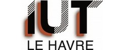

Qui suis-je ?
Ingénieur diplômé du CESI Normandie, je fais carrière dans le secteur de l'ingénierie industrielle. L'organisation en équipe pluridisciplinaires sur les projets me convient parfaitement. Je mets à disposition mes compétences et mon expérience dans les domaines de l'instrumentation, du contrôle-commande et des courants faibles pour les clients maître d'ouvrage/producteur ou maître d'oeuvre/ingénierie.
Mes Expériences Professionnelles
Chef de projet
Engineering and Consulting
Avril 2010 – Aujourd'hui
Ingénieur chef de projet
Ingenica
2006 – 2010
Responsable projet
SPC Consultant
2003 – 2005
Chargé d'affaires
SOGEQUIP
2002 – 2003
Ingénieur études
Techma et Europe Industrie Engineering
1998 – 2002
Projeteur électricité, instrumentation et contrôle-commande
ERAMET – Raffinerie hydro métallurgique
1989 – 1998
Dessinateur électricité
SNEF – Etudes et travaux électriques
1988 – 1989
Formation
Ingénieur CESI (Centre d’Etudes Supérieures Industrielles)
Ingénieur généraliste option management de projets en formation continue sur 2 ans
1995 - 1997
Unités d'enseignement du Conservatoire National des Arts et Métiers en cours du soir
- Mathématiques générales
- Analyse numérique
- Droit des affaires
1992 - 1994

DUT Génie Electrique et Informatique Industrielle
Option électrotechnique et électronique de puissance
1985 - 1987
Compétences professionnelles
- Maîtrise des standards et des principales normes internationales
- Conception et analyse fonctionnelle des systèmes d’automatisme, suivi des études de détail
- Analyse et conception des systèmes de sécurités instrumentées (analyse des risques et conception des chaînes de sécurité, SIL, HAZOP)
- Elaboration des Process & Instrument Diagram (PID)
- Spécifications générales et particulières de matériel en électricité, instrumentation et automatismes
- Etudes de détail Hook up, schémas de boucles ...
- Spécification de travaux de montage (marché de travaux)
- Préparation des appels d’offres, établissement des tableaux comparatifs
- Budget, planification des tâches
- Choix des fournisseurs, inspection et réception du matériel
- Supervision du montage des instruments et des armoires sur site
- Norme IEC 61508, 511, 512, CFR 21 part11, Gamp 5, BPF
Exercées dans divers secteurs industriels
- L'énergie
- La pharmacie
- Le pétrole
- La chimie
- L'environnement
- La métallurgie